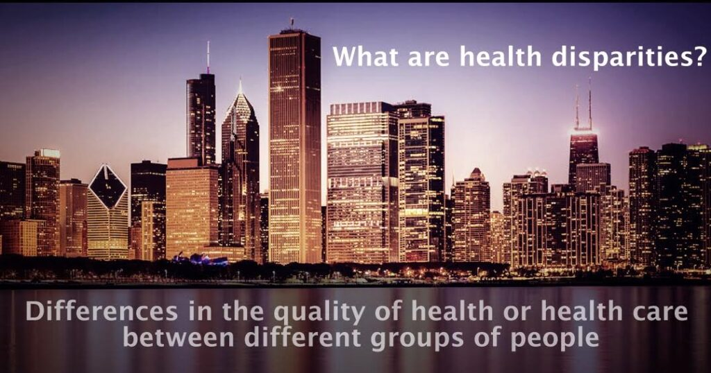

The mission of the Chicago Health Disparities Center (CHDC) is to engage people with serious mental illness in community-based participatory research efforts that will reduce racial healthcare inequities and promote well-being.
The Chicago Health Disparities Center is a federally funded research center at the Illinois Institute of Technology.
3424 S. State Street
First Floor
Chicago, IL 60616